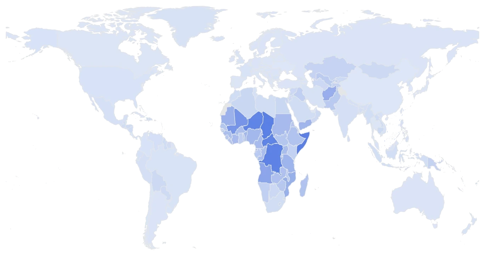
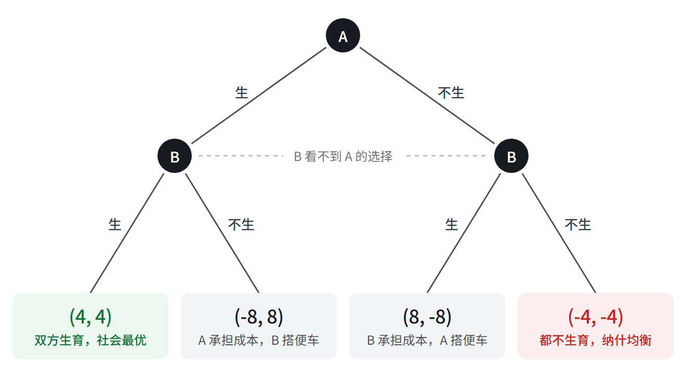
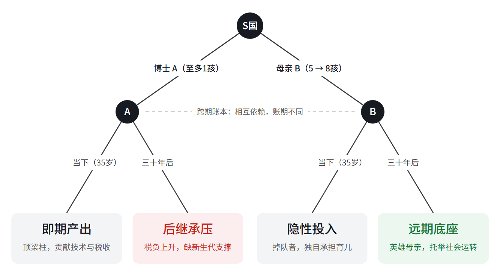
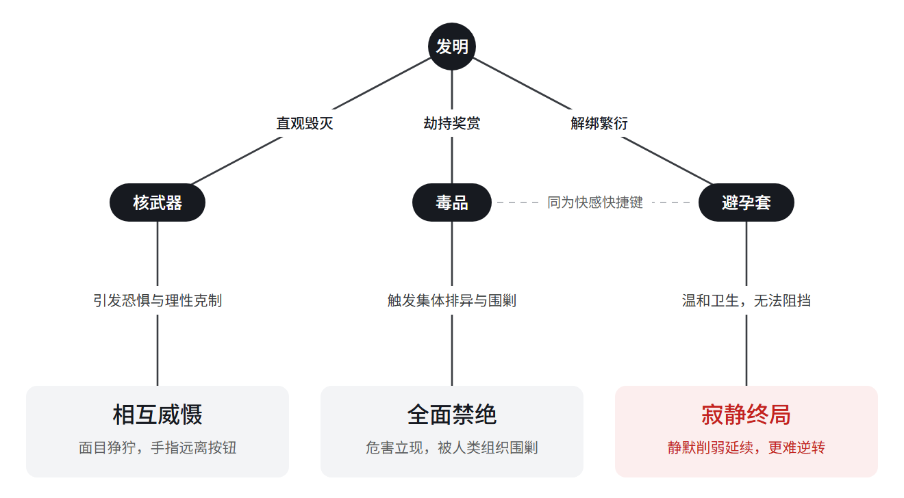

1963年
历史峰值
56
人 / 分钟
钟摆每往返一次 = 出生 1 人
全年出生约 2975 万
约每 1.1 秒出生 1 人
基准 100%
打开本页至今：0 人
当社会还在争论当下的内卷与房价时，未来已在产房的寂静中悄然启程
全年出生数据来自「国家统计局官网“国家数据”」；“打开本页至今”为平均值估算，不代表真实数据。
人口是时间的慢变量，七十余年的出生人口曲线，既是历史数据，也是未来底稿
新中国成立后，社会趋于安定，医疗卫生条件逐步改善，出生人口稳定在高位。1954 年达到 2260 万，那是共和国第一波婴儿潮的顶点。
1959~1961 年，出生人口骤降，1961 年只有 1197 万，不足三年前的一半。
困难一过，被压抑的生育意愿集中释放。1963 年出生 2975 万人，至今仍是历史峰值，此后的整个六十年代，每年出生人口都超过 2400 万。
“晚、稀、少”的婚育倡导推行，叠加生育意愿本身的变化，出生人口从约 2600 万降到 1700 万左右。
1980 年，一对夫妇只生一个孩子成为普遍的生育规范。但六十年代婴儿潮出生的一代人此时集中进入婚育年龄，出生人口反而持续走高，1987 年达到 2529 万——第二波婴儿潮的顶峰。
经历此前的起伏后，中国出生人口逐渐进入相对平稳的阶段。进入本世纪，年出生人口长期维持在 1600 万上下。二十余年间，几代人接连出生。漫长的平稳，让人们误以为这一切会一直延续。
全面二孩落地，出生人口回升到 1883 万。当时不少人相信，拐点来了。回头看，这不过是堆积效应的最后释放——此后，这条曲线再也没能回到 1800 万上方。
2017 年起，出生人口连年下降：2022 年跌破 1000 万；只有 2024 年因龙年效应短暂回升至 954 万，2025 年再创新低——792 万。不足 2016 年的一半，不到 1963 年峰值的三分之一。
2025 年，全国总人口连续第四年负增长。幼儿园在关闭，产科在收缩——曲线还没有见底，后果已经开始到来。
未来，已从产房的寂静中悄然启程……
人口的变化，会在多年以后，显露出真正的力量
近十年各省出生人口降幅排序
各省历年生育地图

2026~2100 年：总人口、出生人口、死亡人口、年减少人数
包含高、中、低三种预测情景
世界主要国家
生育率及生育补贴支出

偏见不会改变客观规律
但认清事实，能让我们免于为幻觉买单
从政要、企业家到人口学者
查阅他们关于人口的公开表述
普京、李光耀、马斯克、李显龙、梁建章、黄文政
一个个看似微小的个人选择，在时间的长河中不断累积，最终汇聚成改变整个社会的力量

少子化的囚徒困境
博士与母亲
核武器、毒品与避孕套